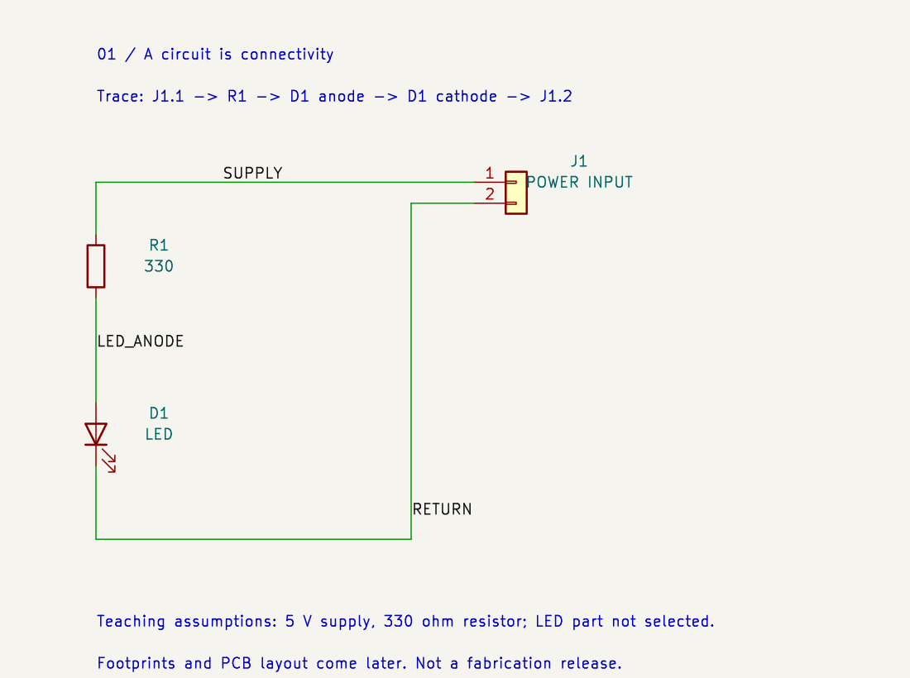

SKELLYCAD / KICAD FOUNDATIONS / 01
Our first design has three parts. Before deciding where they sit on a board, we decide which pins connect.

J1 pin 1 → R1 → D1 anode → D1 cathode → J1 pin 2. J1 connects an external supply. R1 limits the LED current. D1 emits light when operated with suitable forward current. The return connects back to the other supply terminal.
A net is a set of electrically connected pins. We have three: SUPPLY, LED_ANODE and RETURN. The resistor and LED sit between nets; each is a component, not an uninterrupted wire.
| Representation | Question it answers | Today |
|---|---|---|
| Schematic symbol | What does this part connect to? | Three symbols, connected |
| Footprint | Where are its solder pads and holes? | Not selected yet |
| PCB layout | Where do parts and copper go? | Not created yet |
| 3D model | What space does the part occupy? | Later, for FreeCAD fit checks |
These distinctions follow KiCad's basic concepts and workflow.
If we remove the connection between R1 and D1, but leave both symbols in exactly the same places, what happens to the circuit?
The series path is broken. The LED has no complete current path through this circuit. Keeping the symbols in the same positions does not preserve their connection.
Now consider moving the connector to the other side of the physical board while keeping the same pin connections. That is a layout change. It may require different copper routing and a different holder opening, but it need not change the circuit's connectivity.
The marked 330 Ω and assumed 5 V are illustrative. We have not selected an LED or checked its ratings. Zero electrical-rule violations is a connectivity check, not proof of a safe operating current.
In KiCad, open indicator-board/electronics/01-connected-schematic/indicator.kicad_pro, then its schematic. Find J1, R1 and D1 and trace the three nets. No plugin or live API is needed for this lesson.
Tell me what you think happens when the R1–D1 wire is removed, or ask about any unfamiliar term. We will make the next small change together.
Quick reference: symbols, footprints and boards · Native schematic